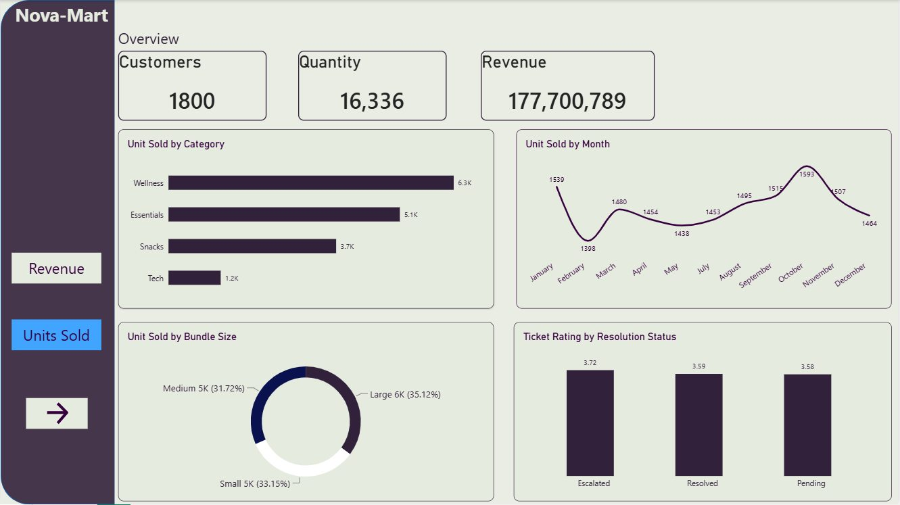
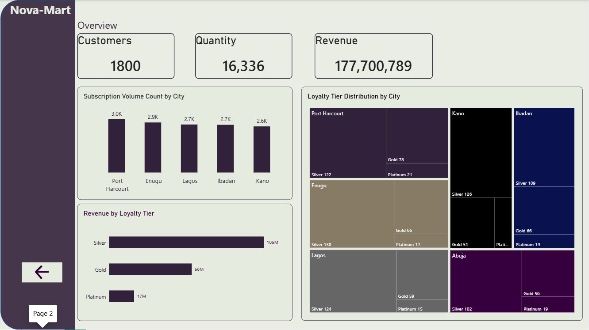

PostgreSQL · Power BI · Business Intelligence
NovaMart: Customer & Product Insights
An end-to-end analytics case study for a fictional Nigerian subscription retailer, examining product demand, customer loyalty, payment outcomes and support experience through SQL analysis and interactive Power BI reporting.
Business challenge
NovaMart needed a clearer view of which product bundles drove demand, how loyalty tiers contributed to sales, where payments failed and how customers rated support. The goal was to turn related operational tables into actionable performance insights.
Approach
01 · SQL exploration
Joined customers, subscriptions, bundles, payments and support tickets to answer five questions: top bundles, average spend by tier, failed payment methods, category revenue and lowest-rated support issues.
02 · Power BI storytelling
Built two report views combining headline KPIs, category and monthly units, bundle-size mix, customer geography, loyalty distribution and support ratings.
Power BI dashboards


Selected findings
Wellness leads unit demand
Wellness accounts for approximately 6.3K units, followed by Essentials at approximately 5.1K.
Silver tier leads revenue
The Silver loyalty tier contributes approximately 105M in the dashboard, ahead of Gold (56M) and Platinum (17M).
Port Harcourt leads subscriptions
Port Harcourt shows the highest city-level subscription volume, approximately 3.0K.
Support ratings warrant attention
Average ticket ratings across Escalated, Resolved and Pending statuses are approximately 3.72, 3.59 and 3.58, respectively.
Business recommendations
- Prioritize inventory and merchandising attention for high-demand Wellness and Essentials categories.
- Investigate opportunities to retain and grow high-contributing Silver customers.
- Review payment failures by payment method to identify checkout friction.
- Analyze low-rated support issue types and resolution processes for targeted improvements.
Figures above are taken from the displayed report. They describe observed patterns in the project data, not verified causal impacts. Monthly labels group the same month across years, so they should not be interpreted as a continuous year-over-year trend.